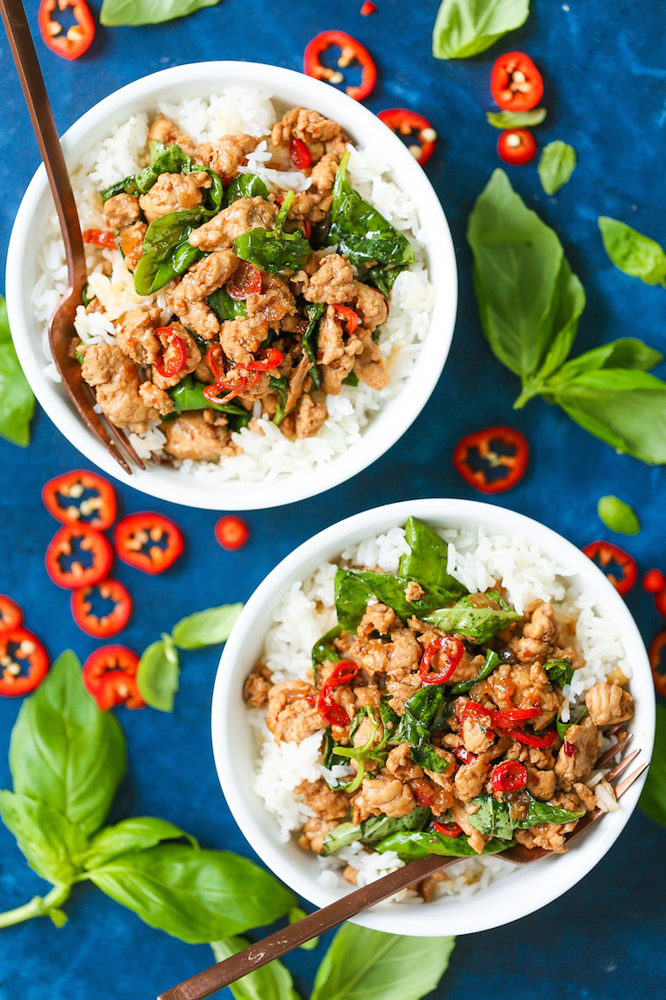

Thai Basil Chicken

Spicy Umami and Herby whats not to love about this dish
Ingredients:
- 1 cup jasmine rice
- 1/2 cup chicken stock
- 3 tablespoons reduced sodium soy sauce
- 1 tablespoon fish sauce
- 1 1/2 tablespoons light brown sugar
- 1 1/2 tablespoons unseasoned rice vinegar
- 2 tablespoons vegetable oil
- 3 cloves garlic
- 2 shallots, thinly sliced
- 1 red Thai chili pepper, thinly sliced
- 1 1/4 pounds ground chicken breast
- 1 1/2 cups packed fresh basil
Directions:
- Cook rice according to package instructions; set aside.
- In a small bowl, whisk together chicken stock, soy sauce, fish sauce, brown sugar and vinegar; set aside.
- Heat vegetable oil in a large skillet over medium heat. Add garlic, shallots and chili pepper. Cook, stirring frequently, until fragrant, about 1-2 minutes.
- Add ground chicken and cook until browned, about 3-5 minutes, making sure to crumble the chicken as it cooks; drain excess fat.
- Stir in stock mixture and cook, stirring constantly, until the sauce has thickened, about 2-3 minutes. Stir in basil until just wilted, about 30 seconds.
- Divide rice into bowls. Top with chicken mixture.
- Serve immediately